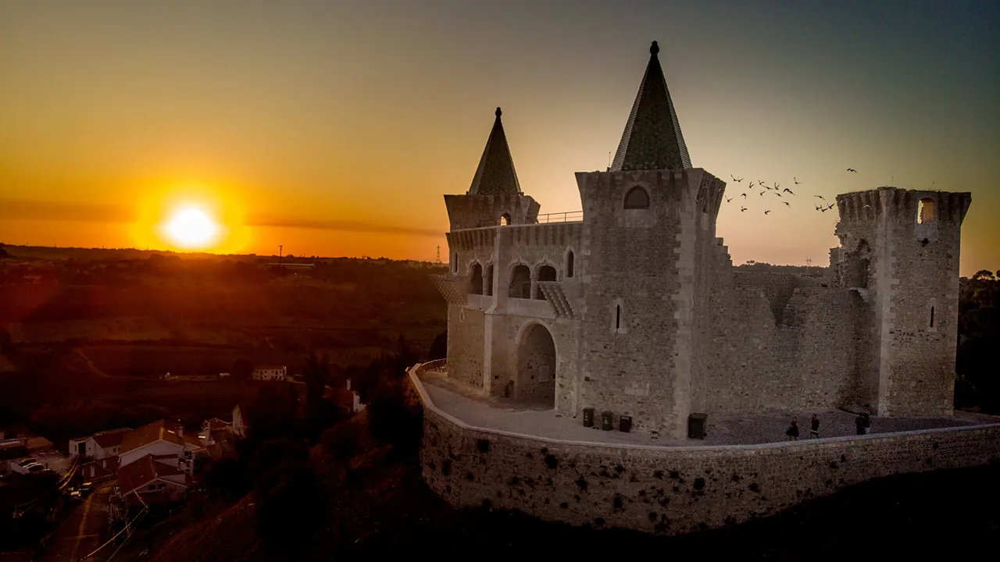

<!doctype html>
<html lang="pt-PT">
<meta charset="utf-8">
<meta name="viewport" content="width=device-width, initial-scale=1">
<title>pdmos.pt</title>
<meta name="robots" content="noindex">
<style>
  :root {
    color-scheme: dark;
    --fundo: #14110D;
    --pedra: #EDE7DA;
    --pedra-2: rgba(237, 231, 218, 0.66);
    --verde: #6FB491;
    --serifa: "Iowan Old Style", "Palatino Linotype", Palatino, "Book Antiqua", Charter, Georgia, serif;
    --margem: clamp(1.25rem, 5vw, 4.5rem);
  }
  * { box-sizing: border-box; }
  body { margin: 0; background: var(--fundo); color: var(--pedra); font-family: var(--serifa); }
  a { color: var(--pedra); text-decoration-color: var(--verde); text-decoration-thickness: 1px; text-underline-offset: 4px; }
  a:hover, a:focus-visible { color: var(--verde); }
  a:focus-visible { outline: 2px solid var(--verde); outline-offset: 4px; }

  .capa { position: relative; display: flex; flex-direction: column; }
  .capa > img, .veu { position: absolute; top: 0; left: 0; width: 100%; height: 100vh; height: 100dvh; }
  .capa > img { object-fit: cover; object-position: 60% 45%; }
  .veu { background: linear-gradient(to top, rgba(14,11,8,0.88) 0%, rgba(14,11,8,0.55) 24%, rgba(14,11,8,0.08) 52%, rgba(14,11,8,0) 70%); }
  .letra { position: relative; min-height: 100vh; min-height: 100dvh; display: flex; flex-direction: column; justify-content: flex-end; padding: var(--margem); max-width: 36rem; }
  h1 { margin: 0; font-size: clamp(3rem, 11vw, 5.5rem); font-weight: 400; line-height: 0.92; letter-spacing: 0.01em; }
  .filete { width: 3rem; height: 2px; background: var(--verde); border: 0; margin: 1.5rem 0 0; }

  .lateral { position: relative; background: var(--fundo); padding: 2rem var(--margem) 3rem; }
  .lateral h2 { margin: 0 0 0.25rem; font-size: 0.8rem; font-weight: 400; letter-spacing: 0.16em; text-transform: uppercase; color: var(--verde); }
  .lateral .sub { margin: 0 0 1rem; font-size: 0.9rem; color: var(--pedra-2); }
  .eventos { list-style: none; margin: 0; padding: 0; }
  .eventos a { display: grid; grid-template-columns: 3rem 1fr; gap: 0.9rem; padding: 0.8rem 0; border-top: 1px solid rgba(237,231,218,0.1); text-decoration: none; line-height: 1.35; }
  .eventos time { display: flex; flex-direction: column; align-items: center; font-size: 0.75rem; letter-spacing: 0.08em; text-transform: uppercase; color: var(--pedra-2); }
  .eventos time b { font-size: 1.6rem; font-weight: 400; line-height: 1; letter-spacing: 0; color: var(--pedra); }
  .eventos small { display: block; font-size: 0.8rem; color: var(--verde); margin-bottom: 0.15rem; }
  .eventos a:hover time b, .eventos a:focus-visible time b { color: var(--verde); }
  .vazio { color: var(--pedra-2); font-size: 0.95rem; }
  .todos { display: inline-block; margin-top: 1rem; font-size: 0.9rem; }

  /* Wide screens: the events become a scrollable panel on the left, where the photo is only sky and fields */
  @media (min-width: 960px) {
    .capa { flex-direction: row; align-items: stretch; height: 100vh; height: 100dvh; }
    .capa > img, .veu { height: 100%; }
    .capa > img { object-position: 100% 45%; }
    .letra { flex: 1; max-width: none; }
    .lateral {
      order: -1; z-index: 1; display: flex; flex-direction: column; width: 24rem; margin: var(--margem) 0 var(--margem) var(--margem); padding: 1.75rem 1.75rem 1.25rem;
      background: rgba(20, 17, 13, 0.72); -webkit-backdrop-filter: blur(12px); backdrop-filter: blur(12px);
      border: 1px solid rgba(237,231,218,0.08); border-radius: 4px;
    }
    .eventos {
      flex: 1; min-height: 0; overflow-y: auto; overscroll-behavior: contain; padding-bottom: 2rem;
      scrollbar-width: thin; scrollbar-color: rgba(111,180,145,0.5) transparent;
      -webkit-mask-image: linear-gradient(to bottom, #000 calc(100% - 3rem), transparent);
      mask-image: linear-gradient(to bottom, #000 calc(100% - 3rem), transparent);
    }
  }
</style>

<main class="capa">
  
  <div class="veu"></div>
  <div class="letra">
    <h1>pdmos</h1>
    <hr class="filete">
  </div>
  <aside class="lateral" aria-labelledby="agenda">
    <h2 id="agenda">Agenda</h2>
    <p class="sub">No concelho, nos próximos 30 dias</p>
    <!--# config errmsg="" -->
    <!--# include virtual="/agenda.html" -->
    <a class="todos" href="https://www.municipio-portodemos.pt/pages/1289">Agenda completa do município</a>
  </aside>
</main>

<!-- Reserved for later: a short how-to-join and the list of services. -->
</html>
